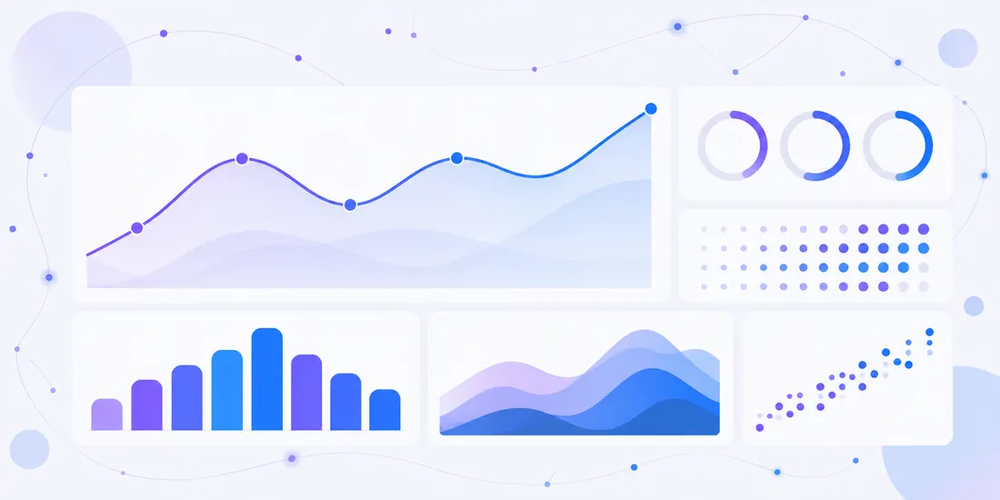

Rotatividade
Bons talentos pedem demissão, levam conhecimento embora e a empresa precisa contratar e treinar de novo.
Sefare Empresas
Escuta dos colaboradores, análise coletiva e orientação para um plano de ação. Apoio à gestão dos riscos ligados à NR-1, dentro do escopo contratado.
Conte o tamanho da equipe e sua principal dúvida. Vamos conversar sobre o escopo do trabalho.
Alexandre Chaves Costa · Psicólogo · CRP 06/213517
As 4 etapas
Dois caminhos
Sinais no dia a dia
Bons talentos pedem demissão, levam conhecimento embora e a empresa precisa contratar e treinar de novo.
Atestados frequentes e ausências de última hora começam a sobrecarregar quem fica na operação.
Desentendimentos entre setores e ruídos de comunicação travam processos simples da rotina.
A equipe parece desanimada, perde prazos e entrega menos do que tem capacidade de realizar.
Muitas vezes, esses problemas não são falta de vontade, mas sinais de que o clima interno pode precisar de cuidado técnico.
Solução
Escuta técnica e análise coletiva para ajudar a enxergar o que pesa na rotina da equipe — e orientar um plano de ação alinhado ao tamanho do negócio.
Detalhes, entregas e perguntas frequentes estão em Para empresas.
Leitura coletiva
Barras e radar fictícios, sem valores. Servem apenas para mostrar o tipo de panorama que um inventário pode organizar.

Dados fictícios, só para ilustrar
Percurso
Entendemos a realidade atual da sua empresa, a dinâmica das equipes e as principais preocupações da gestão.
Os colaboradores participam da escuta técnica conduzida pelo psicólogo responsável, em ambiente protegido.
Consolidamos os dados em um relatório do grupo, sem expor nenhum colaborador.
Apresentamos à gestão caminhos viáveis e personalizados para lidar com os pontos de atenção identificados.
O escopo do trabalho e as etapas de acompanhamento são combinados conforme o contrato firmado com a sua empresa.
Sigilo
Os resultados são apresentados em grupo, para a empresa não ver respostas individuais.
O RH e a diretoria recebem o panorama geral do coletivo, sem nomes associados às respostas.
Com essa proteção ética, os funcionários podem se sentir mais seguros para falar sobre o ambiente de trabalho.
Aplicativo Sefare
O aplicativo Sefare é um espaço digital de bem-estar e autoconhecimento, com a mesma marca e a mesma voz da Sefare.
Responsável técnico
Alexandre Chaves Costa
Psicólogo · CRP 06/213517, responsável técnico pela Sefare
Dúvidas rápidas
É um mapeamento técnico dos fatores de estresse e convivência no trabalho. Ele ajuda a dar clareza sobre o clima interno e apoia as obrigações da NR-1 (PGR/GRO).
Os resultados são apresentados em grupo. A empresa recebe o relatório consolidado, sem ver respostas individuais.
Um psicólogo responsável técnico, Alexandre Chaves Costa, CRP 06/213517, com sigilo e ética profissional.
Use o botão de WhatsApp, conte o tamanho da equipe e sua principal dúvida. Conversamos sobre o escopo do trabalho.
Converse conosco para entender como estruturar o levantamento psicossocial no seu negócio.
Conte o tamanho da equipe e sua principal dúvida. Vamos conversar sobre o escopo do trabalho.
Alexandre Chaves Costa · Psicólogo · CRP 06/213517